Pipeworks is used for crafting and usage of pipes and tubes. In addition to providing pipes for transporting liquids and tubes for transporting items, it also contains a number of devices for working with them. Here’s what it looks like:
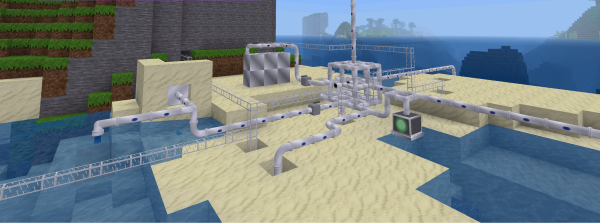
Mesecons is recommended as well for the best possible experience.
Crafting recipes noted here apply only for plain Pipeworks. If Technic is installed (yes it is in Stonecraft), Pipeworks items use alternate recipes. See the Technic documentation for more details.
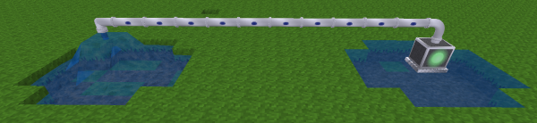
Pipes are round, flanged devices that can transport liquids around - by default, only water. They automatically connect to other pipes and devices that are pipe-compatible, such as valves, flow sensors, pumps and spigots.
Pipes transport liquids at a speed of one meter (node) per second - a run of 30 pipes will take 30 seconds to transport liquid from one end to another.
Digging a pipe carrying liquid drops the empty pipe - the liquid inside is lost.
Pipes “light up” when they contain liquid.
Here’s how you craft it:
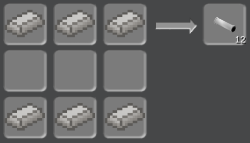
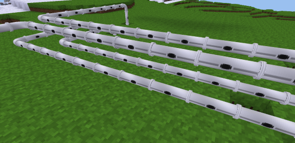
In some cases, you may need to run several pipes in parallel, in a confined space. If you tried to use normal pipes for this purpose, they’d just all connect to one another, which you likely didn’t want. To deal with this, use straight-only pipes. Aside from only connecting at their ends, their main distinguishing mark is the gray line running the length of the pipe (i.e. a “straight” line).
Here’s how you craft it:
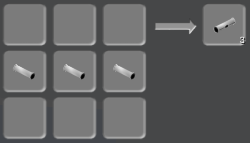
Spigots output the liquid input via pipe into the world.
Spigots only connect from one side.
Connecting a spigot to a pipe carrying water makes water flow out of the bottom of the spigot.
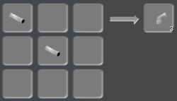
Pumps can be placed inside or over a water source. They are toggled on and off with a right-click, or you can directly control them via Mesecons.
Pumps can be connected to pipes from above. Pipes do not connect to pumps from the side or bottom.
Here’s how you craft it:
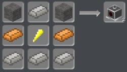
Valves control fluid flow. When active, valves allow liquids to flow through them. Otherwise, liquids cannot flow through them. They are toggled on and off with a right-click, or can be directly controlled using Mesecons.
Here’s how you craft it:
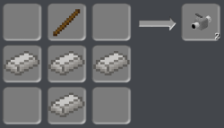
Note: currently not working (does not store any liquid). Storage tanks store liquid in a compact way. Placing multiple storage tanks on top of each other forms one large tank with the same capacity as all the single tanks added together.
Storage tanks can be connected to pipes from above or below. Pipes do not connect to storage tanks from the side.
Here’s how you craft it:
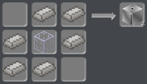
Gratings are decorative items that appear similar to fine metal grids used as barriers.
Here’s how you craft it:
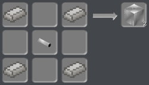
Sealed/airtight pipe entries act as pipes do, except they fill a full block and therefore are generally used for aesthetic purposes, such as running piping through walls.
Sealed/airtight pipe entries can be connected to pipes from the sides, the top, or the bottom.
Here’s how you craft it:
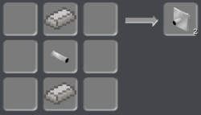
Flow sensors output a Mesecons signal when liquid is present in it, and otherwise does not. They can be used to determine when liquid has reached a particular point.
Here’s how you craft it:
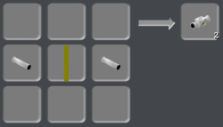
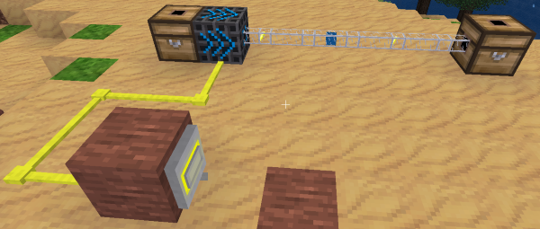
The various tubes seen below are made from plastic sheeting, which is a three-step process to make and is an essential part of pipeworks. First, craft some leaves (anything in the “leaves” group) to get oil:
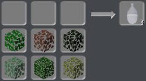
Then cook that into paraffin:
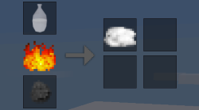
Finally, cook the paraffin into plastic:
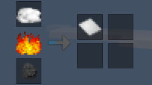
A couple of objects in pipeworks require one or more gears. Craft those with steel ingots and stone, like so:
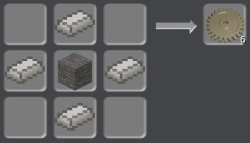
Tubes are boxy, transparent devices that can transport items around. They can automatically connect to other tubes and devices that are tube-compatible, such as chests and injectors. Certain devices may connect to tubes only from certain sides.
Breaking a tube carrying items simply drops the items onto the ground.
Here’s how you craft it:
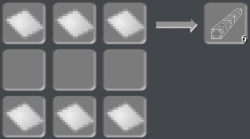
Ordinary chests found in the default game connect to tubes from every side except the front.
Items can be added to chests using tube-related devices, or removed from them using filters/injectors.
Attempting to add items to a full chest results in the item being dropped onto the ground.
Locked Chests
Locked chests from the default game connect to tubes and recieve items as ordinary chests do, but items cannot be removed from locked chests with filters/injectors.
Ordinary furnaces found in the default game connect to tubes from every side except the front.
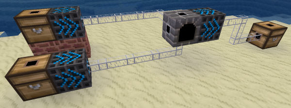
Fuel items can be added to furnaces from the bottom, and items to be smelted can be added from the back. Smelted items can be removed from them using filters/injectors.
Attempting to add items to a full furnace results in the item being dropped onto the ground.
Filters/injectors take items from the node behind them and sends them out in front. They only connect to tubes from the front.
Filters/injectors act only when punched, or when activated via a Mesecons signal.
Right clicking a filter/injector brings up an inventory. If items are added to the inventory, only items matching them will be taken from the node behind it when activated. Items that match the first slot on the filter/injector’s inventory are always chosen before items in the second slot, which are always chosen before the third slot, etc.
Filters/injectors cannot be dug if they contain any items in their inventory.
Here’s how you craft it:
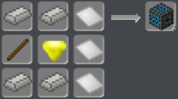
Mese filters/injectors take entire stacks of items from the node behind them and sends them out in front all at once.
Mese filters/injectors act only when punched, or when activated via a Mesecons signal.
Right clicking a mese filter/injector brings up an inventory. If items are added to the inventory, only stacks of items matching them will be taken from the node behind it when activated. Stacks of items that match the first slot on the mese filter/injector’s inventory are always chosen before stacks of items in the second slot, which are always chosen before the third slot, etc.
Mese filters/injectors cannot be dug if they contain any items in their inventory.
Here’s how you craft it:
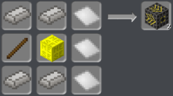
Mese sorting tubes are special tubes that can be used to sort items or force them to move in a certain direction at junctions.
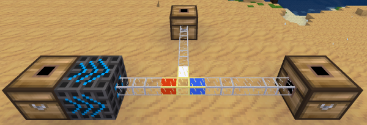
When placed, each direction the tube has a connection to has a distinct color.
Right clicking the tube brings up a form similar to the following:
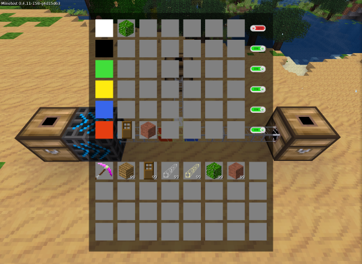
Each row is associated with the color on the left side.
The far right contains an on/off switch for each row.
When “on”, only items that match those in the row associated with the color are allowed to move in that direction. If there are no items in the row, all items are allowed.
When “off”, no items will exit through that direction.
If the tube needs to route items directly into a node with an inventory (such as a chest) and that inventory is full, the sorting tube will try one of its other “on” (e.g. enabled) outputs, at that point routing the item as if the sorting tube were just a normal, ordinary tube. Note that the direction the item cam from may be the first option the item takes. If that happens, turn that direction “off”. If all connected and otherwise-suitable outputs are “off” and the tube can’t route the item, it pops out onto the ground.
When you place an item in these slots, you’re placing ghosts only. That is, only a copy of your item is placed and your inventory remains unchanged. When you remove an item from these slots, it’s simply deleted.
Here’s how you craft it:
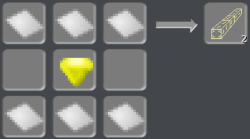
Or alternatively:
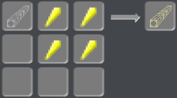
Detector tubes are special tubes that output a Mesecons signal when an item passes through them.
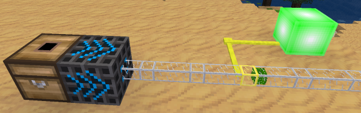
The tubes turn off again when the item leaves.
Here’s how you craft it:
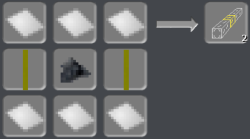
The lua controlled tube can be programmed like a lua controller.
But instead of A, B, C and D, it has the ports blue, red, yellow, green, black and white.
Also there’s an additional event that is called when an item comes through the tube. Return in this event the port, the item shall exit (eg. return "blue"). If a wrong value or nothing is returned, the item will go back to where it came from. The event table looks like this:
{
type = "item",
pin = {name = <src dir>},
itemstring = <itemstring>,
item = <itemstack made to table>,
velocity = <velocity of the tubed item>,
}You can craft lua controlled tubes with a luacontroller and a sorting tube.
Accelerator tubes are special tubes that transport items significantly faster than normal tubes. They appear similar to normal tubes, except with a greenish-blue tint.
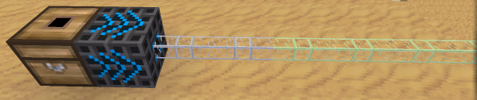
Here’s how you craft it:
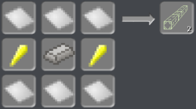
Teleporter tubes are special tubes that move items to other teleporter tubes, regardless of the distance separating them.
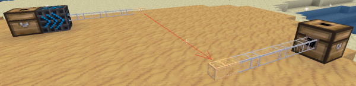
Putting items into the tube via tube-related devices causes them to be teleported.
Right clicking a teleporter tube brings up a form allowing entry of a channel string, similar to the following:
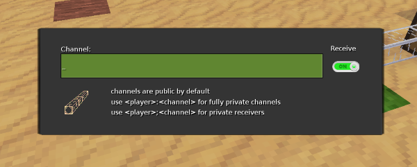
Only teleporter tubes that have the same channel will be linked together and allow items to pass through.
The switch on the right enables or disables the tube’s receiving capability. When “on”, the tube can receive items. Otherwise, items can only be teleported out of the tube, but not into it.
Teleporter tubes with channel names beginning with the name of a player, followed by a colon, are settable only by the specified player. This is useful for making private teleporter tube channels.
Teleporter tubes with channel names beginning with the name of a player, followed by a semicolon, are usable only by the specified player, or by other players if the tube is not “On” (unable to receive items). This allows for mail-like systems where items can be sent into private dropboxes, but can’t be taken out except by the recipient.
If an item enters a teleporter tube, and there are multiple possible teleporter tubes that it can go to, a target is chosen at random from the possibilities.
Here’s how you craft it:
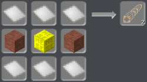
Autocrafters are devices that can automatically follow craft recipes to make new items.
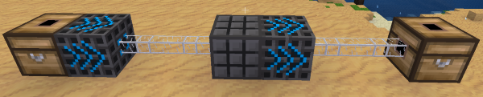
Right clicking an autocrafter brings up a form similar to the following:
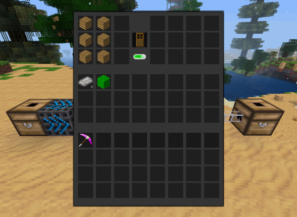
The slots in the top left of the form represent a crafting grid, where items can be arranged in the pattern of a craft recipe. Like the Mese sorting tube, items placed in these slots are ghosts, i.e. copies of what you placed. Removing an item simply deletes it.
In the middle is a single slot that shows the result of the proposed recipe, same as in your Inventory display. You can also directly place an item here and the autocrafter will make a guess and fill its recipe slots with the items that should be used to make that item. Removing the item from this slot deletes it and clears the recipe grid.
Below that is a switch to enable/disable the autocrafter. Default is disabled.
The slots in the top right of the form are the output from the crafting operations. That is, items that have been crafted can be found here. These can also be retrieved from the device using filters/injectors.
The slots in the middle of the form, below the craft recipe and result slots, are the autocrafter’s internal inventory. Items added by the user or fed in by tubes are stored here temporarily until the autocrafter can use them.
The slots at the bottom of the form are the player’s inventory, as usual.
When sufficient materials are present in the autocrafter’s inventory to craft according to its recipe, the device automatically starts crafting them until it runs out of materials.
Here’s how you build it:
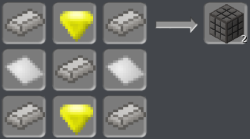
Deployers are devices that place blocks as a player would if one were standing at the exact location of the deployer. They connect to tubes only from the back side.
Deployers act only when activated via a Mesecons signal. On receipt of a signal, they place the next item in their inventory, and if there’s something in the way of the deployer’s output, that object gets pushed aside first.
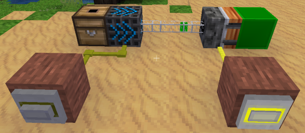
Right clicking a deployer brings up a form similar to the following:
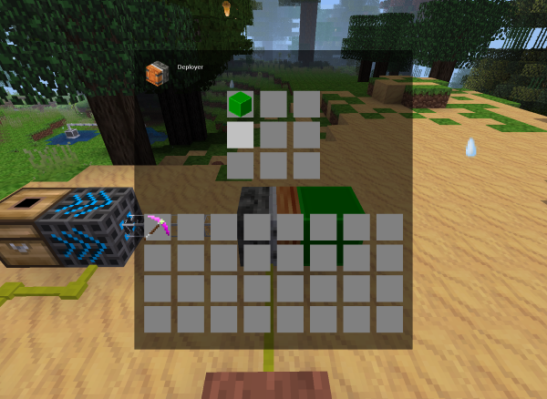
The slots in the top of the form are the deployer’s inventory, storing materials that are placed when the deployer activates. They are taken in order from left to right, top to bottom. New items can be added here using tube-related devices.
The slots at the bottom of the form are the player’s inventory.
Upon activation, a deployer places a node from its inventory into the space directly adjacent to its front side if and only if the space is air. The front side is the face that is fully orange.
Here’s how you craft it:
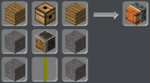
Node breakers are devices that dig blocks as a player would if one were standing at the exact location of the node breaker and dug the target node. They connect to tubes only from the back side.
Node breakers act only when activated via a Mesecons signal.
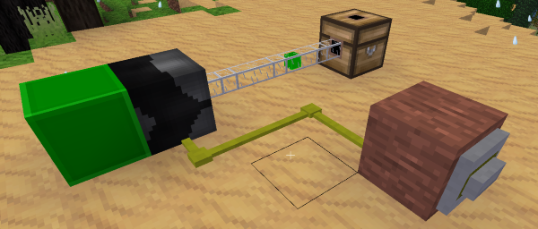
Upon activation, a node breaker digs the node in the space directly adjacent to its front side if and only if the node is non-liquid, diggable, and not air or unloaded. The front side is the face with the “mouth” with thin interleaved lines resembling a shredder.
When you right-click on it, you get a form similar to the following:
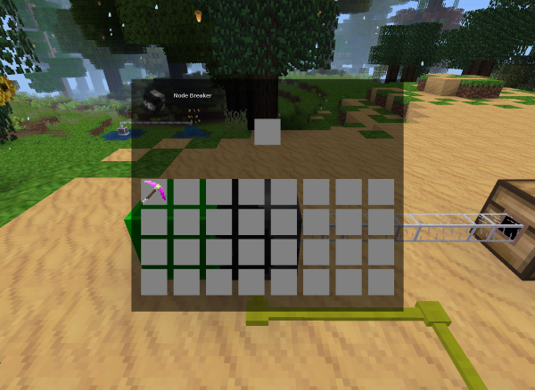
The single slot at the top is for you to add in a custom digging tool. By default, the nodebreaker digs “by hand”, but you could for example put a pick, shovel, tree tap, or whatever else you want here as long as it’s a viable tool.
Here’s how you craft it:
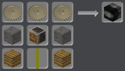
Note: in the past, one used a mese pick to construct a nodebreaker, which it also used as its default tool. This is no longer the case. Old nodebreakers that had nothing in the tool slot will automatically be populated with a mese pick.
Sand tubes are special tubes that vacuum up free items around them. When an item drops near the sand tube, it is sucked up and sent along the tube.
Sand tubes have an effective radius of 2 meters (nodes). Outside of this sphere, items are unaffected.
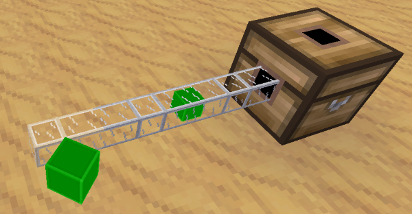
Here’s how you craft it:
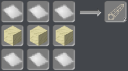
Mese sand tubes pick up items like sand tubes, but they do so in a customizable cubic region rather than a fixed spherical one.
To change the range of a mese sand tube, change the distance specified in the form.
The number entered here can be anywhere from 0 (the default) to 8; it represents a sort of cubic radius from the tube, thus the default is to only pick up items within the tube’s 1x1x1 node, but, if one entered “5”, the tube would pick up items in an 11x11x11 cube.
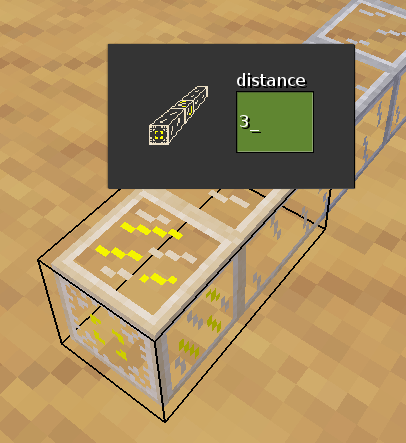
Crafts are similar to the mese sorting tube:
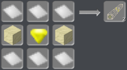
…or using mese crystal fragments and a regular sand tube:
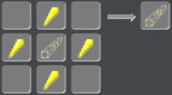